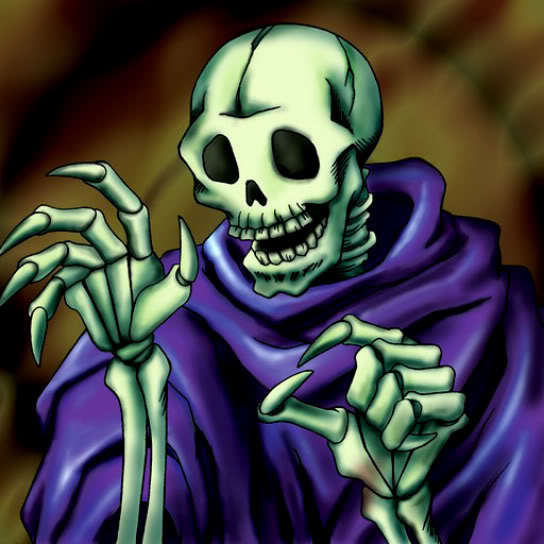

Skull Servant

Description: "When this card is flipped face-up, all Skull Servants are increased by 300 points."
STATS
ATK: 300
DEF: 200DECK COST
Deck Cost per Card: 10EFFECT NOT IMPLEMENTED
Fusion List (55 Possible Fusions)
- Skull Servant + Air Marmot of Nefariousness = Shadow Specter
- Skull Servant + Ancient Jar = Stone Ghost
- Skull Servant + Arlownay = Wood Remains
- Skull Servant + Armed Ninja = Zombie Warrior
- Skull Servant + Baby Dragon = Dragon Zombie
- Skull Servant + Bean Soldier = Pumpking the King of Ghosts
- Skull Servant + Blackland Fire Dragon = Dragon Zombie
- Skull Servant + Bone Mouse = Magical Ghost
- Skull Servant + Boo Koo = Magical Ghost
- Skull Servant + Celtic Guardian = Armored Zombie
- Skull Servant + Crawling Dragon #2 = Skelgon
- Skull Servant + Curtain of the Dark Ones = Magical Ghost
- Skull Servant + Dark Plant = Wood Remains
- Skull Servant + Darkworld Thorns = Pumpking the King of Ghosts
- Skull Servant + Dissolverock = Flame Ghost
- Skull Servant + Djinn the Watcher of the Wind = Magical Ghost
- Skull Servant + Dragon Zombie = Skelgon
- Skull Servant + Dragoness the Wicked Knight = Armored Zombie
- Skull Servant + Dream Clown = Armored Zombie
- Skull Servant + Fairy Dragon = Dragon Zombie
- Skull Servant + Fiend Sword = Armored Zombie
- Skull Servant + Fire Eye = Flame Ghost
- Skull Servant + Fire Reaper = Flame Ghost
- Skull Servant + Flame Snake = Fire Reaper
- Skull Servant + Graveyard and the Hand of Invitation = The Snake Hair
- Skull Servant + Greenkappa = Zombie Warrior
- Skull Servant + Griggle = Wood Remains
- Skull Servant + Kagemusha of the Blue Flame = Zombie Warrior
- Skull Servant + Kuriboh = Shadow Specter
- Skull Servant + Laughing Flower = Wood Remains
- Skull Servant + Lesser Dragon = Dragon Zombie
- Skull Servant + Mammoth Graveyard = Great Mammoth of Goldfine
- Skull Servant + Man Eater = Wood Remains
- Skull Servant + Masked Clown = Zombie Warrior
- Skull Servant + Milus Radiant = Shadow Specter
- Skull Servant + Muka Muka = Stone Ghost
- Skull Servant + Mushroom Man = Wood Remains
- Skull Servant + Mystical Elf = Magical Ghost
- Skull Servant + Nemuriko = Magical Ghost
- Skull Servant + Petit Dragon = Dragon Zombie
- Skull Servant + Pot the Trick = Stone Ghost
- Skull Servant + Princess of Tsurugi = Zombie Warrior
- Skull Servant + Queen's Double = Zombie Warrior
- Skull Servant + Left Arm of the Forbidden One = Magical Ghost
- Skull Servant + Snakeyashi = Pumpking the King of Ghosts
- Skull Servant + Swordsman from a Foreign Land = Zombie Warrior
- Skull Servant + Tentacle Plant = Wood Remains
- Skull Servant + The Bewitching Phantom Thief = Magical Ghost
- Skull Servant + Thunder Dragon = Skelgon
- Skull Servant + Time Wizard = Magical Ghost
- Skull Servant + Trap Master = Zombie Warrior
- Skull Servant + White Dolphin = Corroding Shark
- Skull Servant + White Magical Hat = Magical Ghost
- Skull Servant + Wicked Dragon with the Ersatz Head = Dragon Zombie
- Skull Servant + Yashinoki = Wood Remains